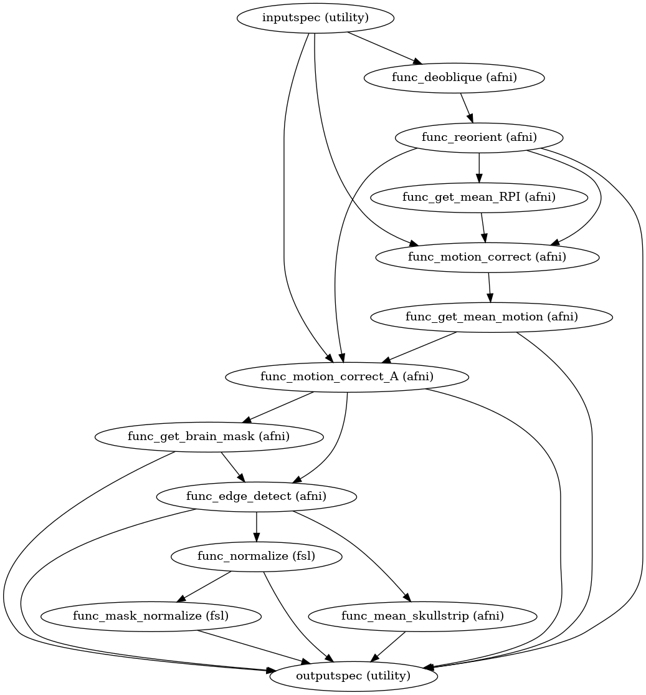

Functional Preprocessing¶
-
CPAC.func_preproc.create_func_preproc(skullstrip_tool, motion_correct_tool, motion_correct_ref, config=None, wf_name='func_preproc')[source]¶ The main purpose of this workflow is to process functional data. Raw rest file is deobliqued and reoriented into RPI. Then take the mean intensity values over all time points for each voxel and use this image to calculate motion parameters. The image is then skullstripped, normalized and a processed mask is obtained to use it further in Image analysis.
Parameters: - wf_name : string
Workflow name
Returns: - func_preproc : workflow object
Functional Preprocessing workflow object
Notes
Workflow Inputs:
inputspec.func : func nifti file User input functional(T2) Image, in any of the 8 orientations inputspec.twopass : boolean Perform two-pass on volume registration
Workflow Outputs:
outputspec.refit : string (nifti file) Path to deobliqued anatomical data outputspec.reorient : string (nifti file) Path to RPI oriented anatomical data outputspec.motion_correct_ref : string (nifti file) Path to Mean intensity Motion corrected image (base reference image for the second motion correction run) outputspec.motion_correct : string (nifti file) Path to motion corrected output file outputspec.max_displacement : string (Mat file) Path to maximum displacement (in mm) for brain voxels in each volume outputspec.movement_parameters : string (Mat file) Path to 1D file containing six movement/motion parameters(3 Translation, 3 Rotations) in different columns (roll pitch yaw dS dL dP) outputspec.skullstrip : string (nifti file) Path to skull stripped Motion Corrected Image outputspec.mask : string (nifti file) Path to brain-only mask outputspec.func_mean : string (nifti file) Mean, Skull Stripped, Motion Corrected output T2 Image path (Image with mean intensity values across voxels) outputpsec.preprocessed : string (nifti file) output skull stripped, motion corrected T2 image with normalized intensity values outputspec.preprocessed_mask : string (nifti file) Mask obtained from normalized preprocessed image
Order of commands:
Deobliqing the scans. For details see 3drefit:
3drefit -deoblique rest_3dc.nii.gz
Re-orienting the Image into Right-to-Left Posterior-to-Anterior Inferior-to-Superior (RPI) orientation. For details see 3dresample:
3dresample -orient RPI -prefix rest_3dc_RPI.nii.gz -inset rest_3dc.nii.gz
Calculate voxel wise statistics. Get the RPI Image with mean intensity values over all timepoints for each voxel. For details see 3dTstat:
3dTstat -mean -prefix rest_3dc_RPI_3dT.nii.gz rest_3dc_RPI.nii.gz
Motion Correction. For details see 3dvolreg:
3dvolreg -Fourier -twopass -base rest_3dc_RPI_3dT.nii.gz/ -zpad 4 -maxdisp1D rest_3dc_RPI_3dvmd1D.1D -1Dfile rest_3dc_RPI_3dv1D.1D -prefix rest_3dc_RPI_3dv.nii.gz rest_3dc_RPI.nii.gz
The base image or the reference image is the mean intensity RPI image obtained in the above the step.For each volume in RPI-oriented T2 image, the command, aligns the image with the base mean image and calculates the motion, displacement and movement parameters. It also outputs the aligned 4D volume and movement and displacement parameters for each volume.
Calculate voxel wise statistics. Get the motion corrected output Image from the above step, with mean intensity values over all timepoints for each voxel. For details see 3dTstat:
3dTstat -mean -prefix rest_3dc_RPI_3dv_3dT.nii.gz rest_3dc_RPI_3dv.nii.gz
Motion Correction and get motion, movement and displacement parameters. For details see 3dvolreg:
3dvolreg -Fourier -twopass -base rest_3dc_RPI_3dv_3dT.nii.gz -zpad 4 -maxdisp1D rest_3dc_RPI_3dvmd1D.1D -1Dfile rest_3dc_RPI_3dv1D.1D -prefix rest_3dc_RPI_3dv.nii.gz rest_3dc_RPI.nii.gz
The base image or the reference image is the mean intensity motion corrected image obtained from the above the step (first 3dvolreg run). For each volume in RPI-oriented T2 image, the command, aligns the image with the base mean image and calculates the motion, displacement and movement parameters. It also outputs the aligned 4D volume and movement and displacement parameters for each volume.
Create a brain-only mask. For details see 3dautomask:
3dAutomask -prefix rest_3dc_RPI_3dv_automask.nii.gz rest_3dc_RPI_3dv.nii.gz
Edge Detect(remove skull) and get the brain only. For details see 3dcalc:
3dcalc -a rest_3dc_RPI_3dv.nii.gz -b rest_3dc_RPI_3dv_automask.nii.gz -expr 'a*b' -prefix rest_3dc_RPI_3dv_3dc.nii.gz
Normalizing the image intensity values. For details see fslmaths:
fslmaths rest_3dc_RPI_3dv_3dc.nii.gz -ing 10000 rest_3dc_RPI_3dv_3dc_maths.nii.gz -odt float
Normalized intensity = (TrueValue*10000)/global4Dmean
Calculate mean of skull stripped image. For details see 3dTstat:
3dTstat -mean -prefix rest_3dc_RPI_3dv_3dc_3dT.nii.gz rest_3dc_RPI_3dv_3dc.nii.gz
Create Mask (Generate mask from Normalized data). For details see fslmaths:
fslmaths rest_3dc_RPI_3dv_3dc_maths.nii.gz -Tmin -bin rest_3dc_RPI_3dv_3dc_maths_maths.nii.gz -odt char
Error
Unable to execute python code at exec.py:30:
create_func_preproc() missing 3 required positional arguments: ‘skullstrip_tool’, ‘motion_correct_tool’, and ‘motion_correct_ref’
High Level Workflow Graph:
Detailed Workflow Graph:

Examples
>>> import func_preproc >>> preproc = create_func_preproc(bet=True) >>> preproc.inputs.inputspec.func='sub1/func/rest.nii.gz' >>> preproc.run() #doctest: +SKIP
>>> import func_preproc >>> preproc = create_func_preproc(bet=False) >>> preproc.inputs.inputspec.func='sub1/func/rest.nii.gz' >>> preproc.run() #doctest: +SKIP
{kind=link}
-
CPAC.func_preproc.get_idx(in_files, stop_idx=None, start_idx=None)[source]¶ Method to get the first and the last slice for the functional run. It verifies the user specified first and last slice. If the values are not valid, it calculates and returns the very first and the last slice
Parameters: - in_file : string (nifti file)
Path to input functional run
- stop_idx : int
Last volume to be considered, specified by user in the configuration file
- stop_idx : int
First volume to be considered, specified by user in the configuration file
Returns: - stop_idx : int
Value of first slice to consider for the functional run
- start_idx : int
Value of last slice to consider for the functional run